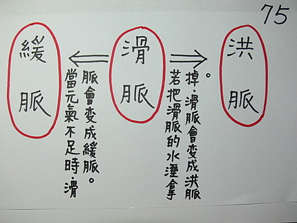

脈理醫理學 33.5.1：滑脈（二）‥‥‥緩脈、滑脈、洪脈之間的相關聯性
作者：陳建元
滑脈代表的病機是痰，這是歷代醫家已經講過的，但尚有更深一層的意義未被探討過，滑是痰，但痰由火熬水而形成，火是指邪火或是人的正氣不虛，所以如果把到的是滑脈，雖是代表痰，但亦是代表有水濕和人體正氣不虛（或有邪火）這兩種情況同時存在，當人體正氣一虛（或火邪消失）的時候，滑脈就會變成緩脈，若是相反的，把水濕這個要件拿掉，則滑脈就會變成洪脈。所以緩脈、滑脈、洪脈這三個脈之間彼此是有相關聯性的，在一定條件下是可以互相轉換的，也就是說三脈在脈譜上是一直線的，這點在前後診比對脈譜時，提供了很大的判斷價值，這點歷代醫家未曾發明，在此特別申論之。〈圖75〉

【引用請先來信告知徵求同意，若有涉及販售營利等商業行為，版權所有拷貝盜用必究。】
【藥王脈學講壇】http://blog.xuite.net/drjychen/twblog